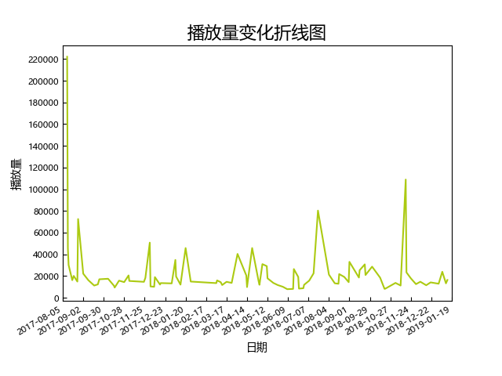

G2.0(20170811-20190119)（双偶首演至第二次组阁）

场次：
89（普通场：48）
平均播放量：
22796（所有公演），15786（普通公演）
中位播放量：
15706（所有公演），14323（普通公演）
标准差：
26358（所有公演），5176（普通公演）
播放量前三：
- 双面偶像首演(222092)
- 18年陈珂生诞(108895)
- 双偶舞台剧(80286)
播放量变化分析：
双偶上演后G队大起飞，从首演开始播放量较之前翻了5倍以上。整体而言这段时期比较平稳，18年底略有下滑
高播放量公演推荐：
- 双面偶像首演：一套优秀的公演的首演是一定要看的。双偶除了有的服装丑了点（特别是讲小mc的那套蛋糕裙真的好丑），歌曲质量和舞台效果都是接近河内公演第一了，《Gravity》词和跳塔、最后踢腿都太有感觉了
- 18年陈珂生诞：只对妮有感觉~粉色泡泡弥漫在中泰剧场里
- 双偶舞台剧《又又》：剧本和表演都太好看了。那时候的谢蕾蕾还是那个镇南王
- 17年陈珂生诞：黑带现场表演跆拳道
- 像偶面双特殊公演：全部环节（从击掌到入场须知）都倒过来的公演，那时候的中泰是真的会玩。当女人的陈珂带着一丝搞笑
- 17年谢蕾蕾生诞：12个有点甜。沁蕾的友情很感人
- 18年朱怡欣生诞：艾朱甜蜜的开端